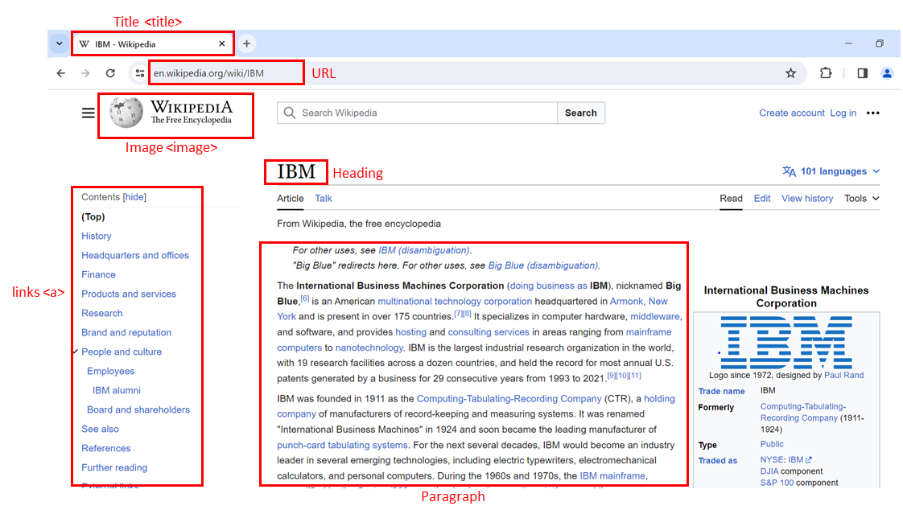

Web Scraping and HTML Basics
Estimated time: 10 mins
Objectives
After completing this reading, you will be able to:
- Explain key concepts related to HTML structure and HTML tag composition.
- Explore the concept of HTML document trees.
- Familiarize yourself with HTML tables.
- Gain insight into the basics of web scraping using Python and BeautifulSoup.
Introduction to web scraping
Web scraping, also known as web harvesting or web data extraction, is the process of extracting information from websites or web pages. It involves automated retrieval of data from web sources. People use it for various applications such as data analysis, mining, price comparison, content aggregation, and more.
How web scraping works
HTTP request
The process typically begins with an HTTP request. A web scraper sends an HTTP request to a specific URL, similar to how a web browser would when you visit a website. The request is usually an HTTP GET request, which retrieves the web page's content.
Web page retrieval
The web server hosting the website responds to the request by returning the requested web page's HTML content. This content includes the visible text and media elements and the underlying HTML structure that defines the page's layout.
HTML parsing
Once the HTML content is received, you need to parse the content. Parsing involves breaking down the HTML structure into components, such as tags, attributes, and text content. You can use BeautifulSoup in Python. It creates a structured representation of the HTML content that can be easily navigated and manipulated.
Data extraction
With the HTML content parsed, web scrapers can now identify and extract the specific data they need. This data can include text, links, images, tables, product prices, news articles, and more. Scrapers locate the data by searching for relevant HTML tags, attributes, and patterns in the HTML structure.
Data transformation
Extracted data may need further processing and transformation. For instance, you can remove HTML tags from text, convert data formats, or clean up messy data. This step ensures the data is ready for analysis or other use cases.
Storage
After extraction and transformation, you can store the scraped data in various formats, such as databases, spreadsheets, JSON, or CSV files. The choice of storage format depends on the specific project's requirements.
Automation
In many cases, scripts or programs automate web scraping. These automation tools allow recurring data extraction from multiple web pages or websites. Automated scraping is especially useful for collecting data from dynamic websites that regularly update their content.
HTML structure
Hypertext markup language (HTML) serves as the foundation of web pages. Understanding its structure is crucial for web scraping.
<html>is the root element of an HTML page.<head>contains meta-information about the HTML page.<body>displays the content on the web page, often the data of interest.<h3>tags are type 3 headings, making text larger and bold, typically used for player names.<p>tags represent paragraphs and contain player salary information.
Composition of an HTML tag
HTML tags define the structure of web content and can contain attributes.
- An HTML tag consists of an opening (start) tag and a closing (end) tag.
- Tags have names (
<a>for an anchor tag). - Tags may contain attributes with an attribute name and value, providing additional information to the tag.
HTML document tree
You can visualize HTML documents as trees with tags as nodes.
- Tags can contain strings and other tags, making them the tag's children.
- Tags within the same parent tag are considered siblings.
- For example, the
<html>tag contains both<head>and<body>tags, making them descendants of<htmlbut children of<html>.<head>and<body>are siblings.
HTML tables
HTML tables are essential for presenting structured data.
- Define an HTML table using the
<table>tag. - Each table row is defined with a
<tr>tag. - The first row often uses the table header tag, typically
<th>. - The table cell is represented by
<td>tags, defining individual cells in a row.
Web scraping
Web scraping involves extracting information from web pages using Python. It can save time and automate data collection.
Required tools
Web scraping requires Python code and two essential modules: Requests and Beautiful Soup. Ensure you have both modules installed in your Python environment.
- 1
- 2
# Import Beautiful Soup to parse the web page contentfrom bs4 import BeautifulSoup
Fetching and parsing HTML
To start web scraping, you need to fetch the HTML content of a webpage and parse it using Beautiful Soup. Here's a step-by-step example:
- 1
- 2
- 3
- 4
- 5
- 6
- 7
- 8
- 9
- 10
- 11
- 12
- 13
- 14
- 15
- 16
- 17
import requestsfrom bs4 import BeautifulSoup# Specify the URL of the webpage you want to scrapeurl = 'https://en.wikipedia.org/wiki/IBM'# Send an HTTP GET request to the webpageresponse = requests.get(url)# Store the HTML content in a variablehtml_content = response.text# Create a BeautifulSoup object to parse the HTMLsoup = BeautifulSoup(html_content, 'html.parser')# Display a snippet of the HTML contentprint(html_content[:500])
Navigating the HTML structure
BeautifulSoup represents HTML content as a tree-like structure, allowing for easy navigation. You can use methods like find_all to filter and extract specific HTML elements. For example, to find all anchor tags () and print their text:
- 1
- 2
- 3
- 4
- 5
- 6
# Find all <a> tags (anchor tags) in the HTMLlinks = soup.find_all('a')# Iterate through the list of links and print their textfor the link in links:print(link.text)
Custom data extraction
Web scraping allows you to navigate the HTML structure and extract specific information based on your requirements. This process may involve finding specific tags, attributes, or text content within the HTML document.
Using BeautifulSoup for HTML parsing
Beautiful Soup is a powerful tool for navigating and extracting specific web page parts. It allows you to find elements based on their tags, attributes, or text, making extracting the information you're interested in easier.
Using pandas read_html for table extraction
Pandas, a Python library, provides a function called read_html, which can automatically extract data from websites' tables and present it in a format suitable for analysis. It’s similar to taking a table from a webpage and importing it into a spreadsheet for further analysis.
Conclusion
In this reading, you learned about web scraping with BeautifulSoup and Pandas with emphasis on extracting elements and tables. BeautifulSoup facilitates HTML parsing, while Pandas' read_html streamlines table extraction. The reading also highlighted responsible web scraping, ensuring adherence to website terms. Armed with this knowledge, you can confidently engage in precise data extraction.